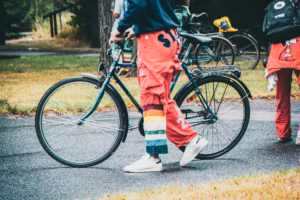

Ny i Lund?
Att göra inför nollningen:
Tacka ja till och registrera dig på utbildningen
För att bekräfta att du vill läsa utbildningen måste du tacka ja till din plats att registrera dig på utbildningen. Info kring detta hittar du lättast i ditt antagningsbesked. Se till att göra detta så snabbt som möjligt!
Gå med i Teknologkåren
Teknologkåren anordnar mängder med event såväl under som efter nollningen och för att kunna delta behöver du vara medlem. Medlemskapet ger även tillgång till sektionens event.
Gå med i Studentlund
Studentlund är ett medlemskap som ger dig tillgång till mycket av det som gör Lund till en otrolig studentstad, detta inkluderar nationer och Akademiska Föreningen som bland annat förvaltar bostäder under AF-bostäder!
Sök studiemedel
Om du ska söka studiemedel är det bäst att göra det för hela året, sök alltså inte terminsvis! Se också till att lämna in studieförsäkran så snabbt som möjligt!
Ladda ned mecenat
Förutom att ge dig tillgång till mängder av bra studentrabatter används också Mecenat för att visa att man är medlem i Teknologkåren, det behövs alltså för att delta på Nollningens event.
Sök studentbostad
Att hitta bostad kan kännas både svårt och krångligt. Det måste det inte vara! Viktigt att ta med sig är dock att den som är ihärdig och kämpar oftast hittar någonting i slutändan, så ge inte upp även om det ser mörkt ut. För att underlätta sökandet har Phøset satt ihop en lista på ställen där man kan få napp.

Att ta med:
Cykel

Cykeln är Lunds bästa och enklaste färdmedel och en given favorit när det gäller att ta sig runt i stan.
Sällan tar det längre än tio minuter att cykla någonstans.
Har du inte möjlighet att ta med dig någon cykel kan det vara läge att börja spana efter en.
Finkläder
Under nollningen kommer det att arrangeras många “finsittningar”.
Så se till att slipsen, finklänningen, topphatten och klackarna kommer med i packningen.
Nål och tråd
Ert vackraste och mest värdefulla plagg under er tid på LTH kommer att bli eran Ouverall.
Denna ska givetvis dekoreras med attiraljer som vittnar om de fem magiska åren ni har framför er.
Men om det är så att syslöjd aldrig var din grej i skolan så är tyglim ett hett tips!
Oömma kläder och skor
Många av nollningens aktiviteter äger rum ute i den vilda omgivningen vi kallar “utomhus”.
Det är kul att kunna ge allt utan begränsningar.
Så se till att ta med såväl kläder som skor som får lov att bli smutsiga!
Vi ses i augusti!
Vi i phøset och alla andra engagerade i nollningen ser verkligen fram emot att träffa dig och visa upp allt roligt såväl Maskinsektionen som studentstaden Lund har att erbjuda! Ifall du har några frågor kring nollningen eller något annat relaterat till din studietid - tveka inte att maila till nollning@maskinsektionen.com!
Maskinsektionen inom TLTH
M SEK Nollning
M SEK INFO
M SEK COMMUNITY
M SEK CAREER
M SEK KÖP OCH SÄLJ
M SEK IDROTT
Maskinsektionen inom TLTH
Phøret